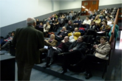

About XXX ENDIO - XXVII EPIO
Los Encuentros Nacionales De Docentes en Investigación Operativa (ENDIO) y las Jornadas de la Escuela de Perfeccionamiento en Investigación Operativa (EPIO), congregan a docentes, investigadores, estudiantes de grado y de postgrado de diferentes carreras universitarias y por tanto, con perfiles y orígenes curriculares diversos. Ingenieros de distintas especialidades, Contadores y Licenciados en Administración, Matemáticos, Analistas en Sistemas, constituyen las profesiones más frecuentes entre los asistentes. En su mayoría, se desempeñan en asignaturas tales como Investigación Operativa, Investigación de Operaciones, Métodos Cuantitativos, Modelos y Simulación, Estadística, Operaciones, Logística, entre otras, o realizan posgrados vinculados con esas temáticas.
Previous Events
2013
|
2014

|
2015
|
2016
|